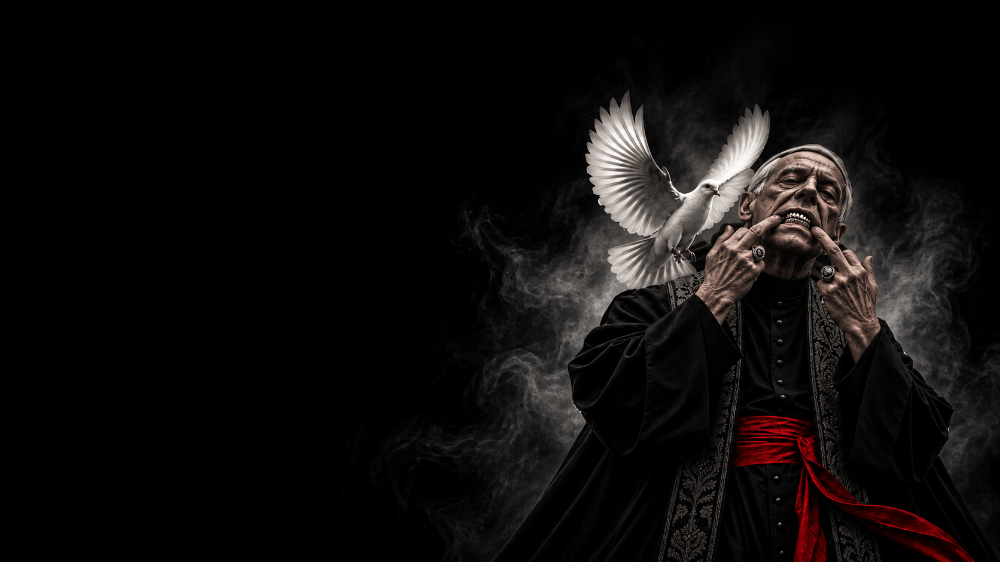

МИРНЫЕ · КОМАНДНАЯ
МИРНЫЙ
ЕГО СИЛА —
В ГОЛОСЕ.
Мирные
Командная · Без активной способности
Голос города — не имеет ночной способности. Главные инструменты Мирного — наблюдение, логика, обсуждение и голосование.
Мирный житель не обладает особыми способностями, но именно от его решений зависит судьба города. Днём он участвует в обсуждении, анализирует поведение других игроков и голосует против тех, кого считает Мафией.
Отсутствие способности не делает Мирного менее значимым. Его главная задача — помочь своей команде вычислить и вывести из игры всю Мафию, не позволив мирным уничтожить друг друга.
Слушай не только то, что говорят игроки, но и то, как меняется их позиция. Сравнивай слова с голосованиями, замечай противоречия и не бойся задавать неудобные вопросы.